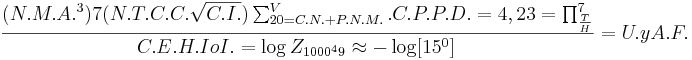

De: La Frikipedia, la enciclopedia extremadamente seria.
De: La Frikipedia, la enciclopedia extremadamente seria. De: La Frikipedia, la enciclopedia extremadamente seria.
| De la serie planetas para todos: | ||
| Felicidonia | ||
| ||
| Diámetro | Igual que la Tierra. | |
| Inclinación | Pa' cualquier lado. | |
| Atmósfera | Un 10% de dióxido de carbono, 5% de oxígeno y el 75% restante lo conforma el humo de porro. | |
| Gravedad | 45 veces menos que la Tierra. | |
| Satélites | 15 millones. | |
| Sistema planetario | Sistema Marihuanero. | |
| Estrella en torno a la que gira | Tiene 4. | |
| ¿Existe vida inteligente? | ¡Ni ahí! | |
| Razas | Solo las que no murieron por el humo de porro. | |
| Distancia desde la Tierra | A 150 petas de distancia. | |
| Descubridor | Homero Simpson. | |
Bandera antigua.
Felicidonia es un planeta parecido a la Tierra más extraño que Pandora y más ridículo que un chupete en el culo, ha sido visto por muy pocos terrícolas, y ha sido visitado por menos aún. Es de dificil acceso, casi imposible para la gente normal, y es gobernado por Harry Petas.
Había una vez un chico Inglés muy drogón, tan drogón que cuando los amigos lo invitaban a escaparse y comprar cualquier merca, él ya estaba consumiéndola e invitándole a los niños que se le cruzaban por ahí. Su nombre era Harry Potter.
Un día estaba muy aburrido, así que se le ocurrió la mejor idea que a un drogadicto se le podría ocurrir: Meterse todas las clases de drogas existentes de una sola vez. Así que juntó marihuana, cocaina, efedrina, heroína, hesteroides y muchas otras clases más y las introdujo por su culo a su cuerpo. Cuando el cerebro lo tenía verde, y estaba a punto del colapso, se produjo un vacío con una gravedad tan potente que se lo fornicó por el orto chupó y lo llevó a otra dimensión, la dimensión de Diox.
Cuando él y el Monstruo Espaguetti Volador se conocieron, el todopoderoso estaba muy enojado porque Harry había consumido ya la mitad de las drogas fumables del mundo, dejándole muy poco a los colombianos y bolivianos, así que empezó a cagarlo a pedos.
Trés días despues, Diox se cansó de reprochar a Harry y comenzó a conversar con el civilizadamente. Con el tiempo se fueron haciendo amigos y los pecados de Harry quedaron exonerados. A pesar de eso, como ya casi no quedaba María, el "lentejudo", no podía regresar a la Tierra pues sería riesgoso, así que en un acto de misericordia, Dioxito creó Felicidonia, un planeta donde jamás se acabarían las drogas, por mas que mil millones de drogadictos como vos se fumaran 20 cañazos al día, y debido a eso, todo aquel que viviera allí sería feliz (De ahí su nombre), y entonces vió que era bueno.
Un año y medio más tarde, Diox vió que Harry no era del todo feliz en Felicidonia puesto que estaba solo, así que le arrancó una tripa a Harry y con ese chinchulin le trajo a Hermione Zorraenger y les concedió la inmortalidad a ambos, para que garcharan y garcharan y así poblaran Felicidonia.
En el año 2003, Homero J. Simpson descubrió Felicidonia, pero no pudo quedarse a vivir allí.
En promedio, Felicidonia tiene un alto índice de desarrollo humano, sus pobladores tienen gran inteligencia, y se maneja económinamente bién. Esto último es verdad puesto que cultivan "las plantitas" campos de como tropocientas mil hectareas igual que Argentina, Colombia y Paraguay y en lugar de metales y piedras preciosas, cuando excavan del suelo salen pastillas de éxtasis y resina de cocaína (Paco/Pasta base). Después de la obtención, exporta sus interminables dotaciones de droga a otros planetas cercanos a los que se les acaba porque vos no parás de aspirar, como por ejemplo la Tierra, Saturno y el Planeta de los Simios.
Todos los felicidonianos son artistas natos, se la pasan pintando es sus ratos de felicidad (O si prefieren decirlo, cuando están falopeados) y la temática de sus obras de arte varía entre porros, ojas de cocaina y marihuana y otros narcóticos procesados en píldoras. También les gusta dibujarlos y esculpirlos.
Si de llegar hasta allá respecta, la única manera de lograrlo es haciendo lo mismo que Harry, recomendable, ya que las probabilidades de que lo consigas es de un décimo en chorrocientos mil chiliones y las de que mueras son de tan solo un 99,999999999999999999999%.
Si de transportarse por el planeta se trata, bueno, hay muchas maneras, entre ellas se puede caminar, correr, andar en auto, moto o bicicleta, si querés podes usar trenes y metros. Volar en avión nunca se descarta, también podés volar como Superman o irte de un continente a otro excavando como Bugs Bunny. No se te olvide que podés nadar como Acuaman.
Debido a la dificultad que presenta llegar a ese planeta, su apariencia puede variar una vez que llegás ahí, y los cambios dependen de diversos factores, presentables en la siguiente ecuacion:

Referencias:
En Felicidonia suceden y hay cosas extrañas que jamás podrían ocurrir en la Tierra, y estas son solo algunas de ellas:
Autor(es):